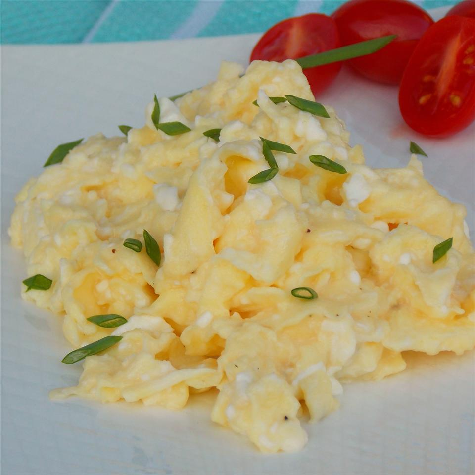

Creamy Cottage Cheese Scrambled Eggs!

Description
A modified and hearty change-up to traditional scrambled eggs. A protein-packed meal that can be enjoyed anytime!
Ingredients
- 1 tablespoon butter
- 4 eggs, beaten
- ¼ cup cottage cheese
- ground black pepper to taste
- 1 teaspoon chopped fresh chives, or to taste (Optional)
Steps
- Melt butter in a skillet over medium heat. Pour beaten eggs into the skillet; let cook undisturbed until the bottom of the eggs begin to firm, 1 to 2 minutes.
- Stir cottage cheese and chives into eggs and season with black pepper. Cook and stir until eggs are nearly set, 3 to 4 minutes more.
Return to Main Page